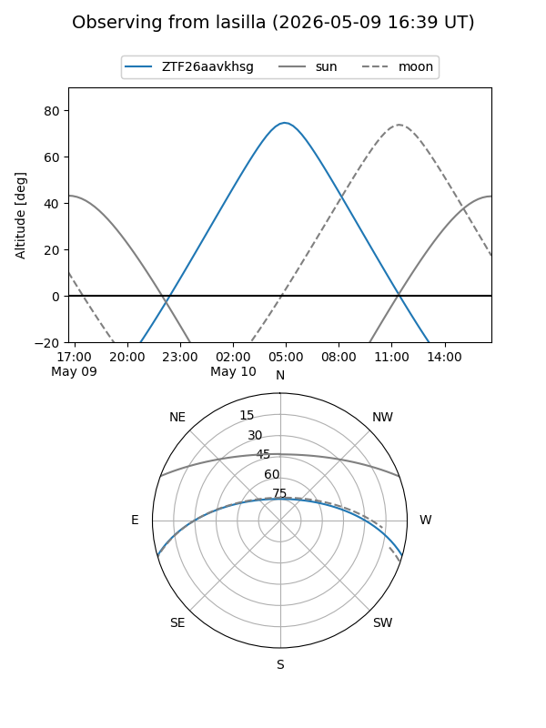
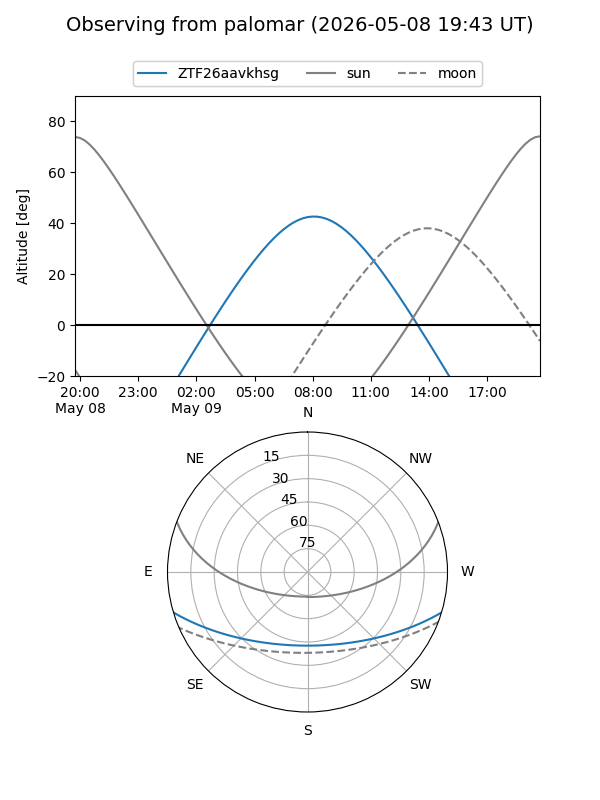

ZTF26aavkhsg
Target ZTF26aavkhsg at 2026-05-09 10:00
Aliases and brokers:
FINK: link
Lasair: link
ALeRCE: link
alt names
ZTF26aavkhsg (ztf,fink_ztf)
Coordinates:
equatorial (ra, dec) = 230.8814,-13.89470
equatorial (HMS+DMS) = 15:23:31.54,-13:53:40.90
galactic (l, b) = (349.6852,+34.82667)
Flags:
Photometry:
last ztfg=19.73
1 ztfg detections
Lightcurve
Visibility


Additional plots